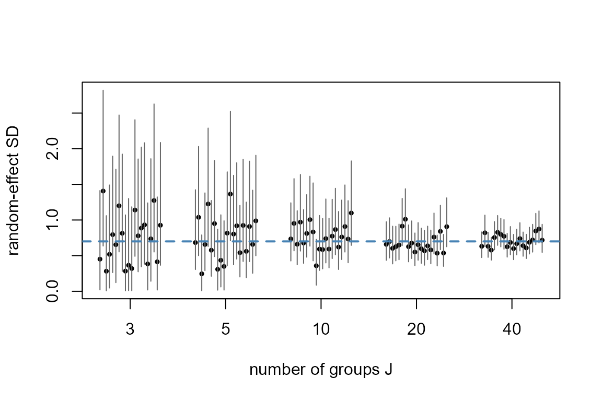
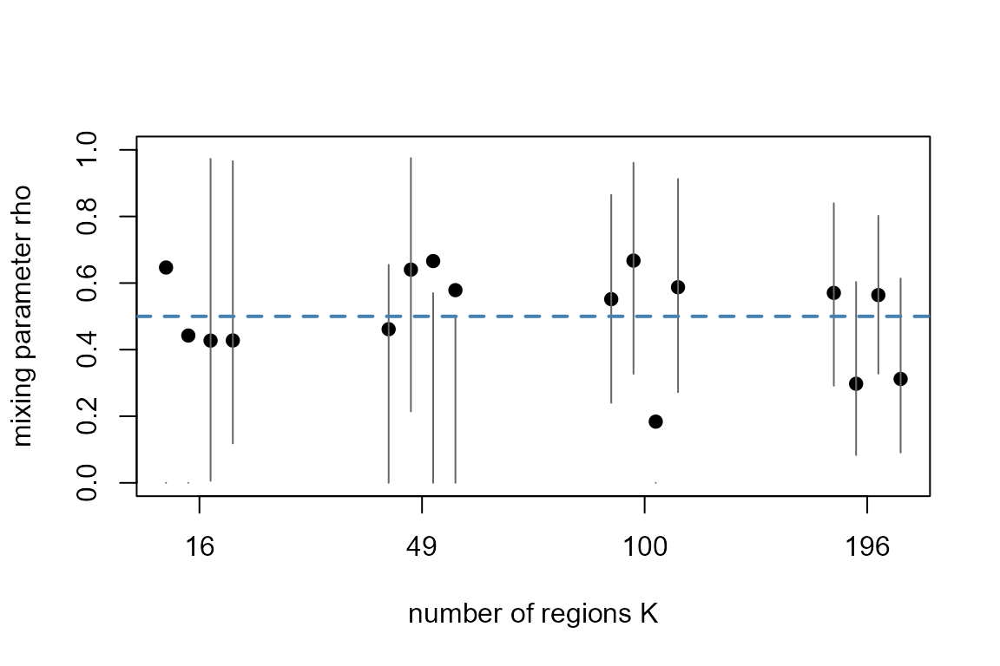
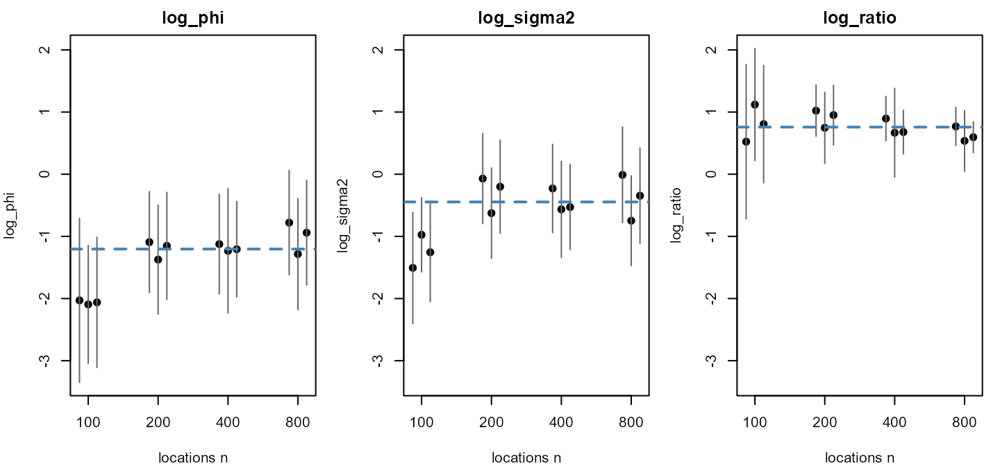

A parameter is identifiable when different values of it give different distributions of the data. Two kinds of failure appear in the models tulpa fits. In an exact alias, two parameters can move together without changing the likelihood at all, so no amount of data separates them and the model has to fix one of them by construction. In a weak identification, the likelihood does change, but slowly, so a hyperparameter is learned only once the design holds enough regions, locations or groups. This article derives the four cases the engine handles (the level of an intrinsic field, the level of a varying coefficient, the BYM2 variance split together with the range and scale of a Gaussian process, and a random-effect standard deviation), shows how the engine resolves the exact aliases, and ends with stress tests and the design numbers they give. It assumes the model syntax of Spatial models and Temporal models. Installation is covered in Get started.
The intercept and the level of an intrinsic field
Consider regions joined by an adjacency matrix , and let be the diagonal matrix of neighbour counts. Observation lies in region and has the linear predictor
The ICAR prior on the field has density proportional to . Every row of sums to zero, so for the vector of ones . Replacing by therefore leaves the prior density unchanged, and replacing by at the same time leaves every unchanged. The likelihood is constant along the line for every real , and the ICAR prior puts no density on that direction either.
The engine removes the alias with a sum-to-zero constraint, , which picks one point on each such line. The field then carries only the contrasts between regions, and the intercept carries the overall level, including any level the true field had. A graph with several connected components has one zero eigenvalue of per component, so each component needs its own constraint, and an RW1 time trend is the same construction on a chain graph.
The simulation below puts a field with a known level on a ring of 25 regions. The field is a centred wave plus a shift of 0.3, and the intercept is 0.5, so the model can identify an intercept of 0.8 and a field equal to the centred wave.
ring <- function(K) {
W <- matrix(0, K, K)
for (i in 1:K) {
j <- if (i < K) i + 1 else 1
W[i, j] <- W[j, i] <- 1
}
W
}
K <- 25
W <- ring(K)
wave <- as.numeric(scale(sin(2 * pi * (1:K) / K)))
set.seed(1)
n <- 600
x <- rnorm(n)
region <- sample(1:K, n, replace = TRUE)
y <- rpois(n, exp(0.5 + 0.4 * x + wave[region] + 0.3))
d_icar <- data.frame(y = y, x = x, region = factor(region))Fit the field by nested Laplace and read the intercept and slope.
fit_icar <- tulpa(y ~ x + spatial(region), data = d_icar,
family = "poisson",
spatial = list(type = "icar", adjacency = W),
mode = "nested_laplace", control = list(n_threads = 2))
#> [nested-laplace] 1/9 cells (11%) | elapsed 0s | ETA >=0s | 0.00s/cells
#> [nested-laplace] 5/5 cells (100%) | elapsed 0s | ETA done | 0.00s/cells
coef(summary(fit_icar))
#> estimate std.error 2.5 % 97.5 %
#> (Intercept) 0.8076100 0.03399823 0.7369889 0.8702595
#> x 0.4318294 0.02136258 0.3899636 0.4737033The intercept interval contains 0.8, the intercept plus the shift,
and the slope interval contains 0.4. Each cell of the outer grid holds
one inner Laplace mode, whose columns after the fixed effects are the 25
field values (tulpa_outer_grid()). Their sums show the
constraint at every cell.
g <- tulpa_outer_grid(fit_icar)
field_cells <- g$modes[, g$n_fixed + seq_len(K)]
range(rowSums(field_cells))
#> [1] -2.026157e-15 3.365364e-15
field_hat <- colSums(g$weights * field_cells)
cor(field_hat, wave)
#> [1] 0.99445The field sums to zero up to rounding error in every cell, and the grid-averaged field tracks the centred wave. The shift of 0.3 cannot be recovered as a property of the field: the data contain it only as part of the intercept.
The level of a varying coefficient
A varying coefficient lets a slope change over time or space. With a coefficient on a covariate , the linear predictor is
Replacing by and by leaves , and so , unchanged for every value of . This is the same alias as in the previous section, moved from the intercept to a slope. Which instrument removes it depends on the prior on :
- For an intrinsic prior (
rw1,rw2), the constant direction carries no prior density, so the engine supplies the missing constraint: it augments the precision on the constant direction and pins , as for the ICAR field. - For a proper prior (
ar1,gp), the constant direction already carries a prior, with precision for the field covariance . Nothing needs to be added to the prior. The engine instead removes the direction from the likelihood by centring the field on its way into , so the linear predictor uses , with the mean over the time points.
In both cases is the average coefficient over the time points and is the departure from it. The simulation below uses 30 time points with 20 observations each, a wave of amplitude 0.4 shifted up by 0.25 as the true , and . The identifiable slope is therefore .
set.seed(5)
n_time <- 30
time <- rep(1:n_time, each = 20)
w_true <- 0.4 * sin(2 * pi * (1:n_time) / n_time) + 0.25
x <- rnorm(length(time))
y <- rpois(length(time), exp(0.5 + (0.5 + w_true[time]) * x))
d_tvc <- data.frame(y = y, x = x, time = time)Fit the coefficient once with an intrinsic rw1 prior and
once with a proper ar1 prior. Both fits run the NUTS
sampler, here with two chains.
fit_tvc <- lapply(c(rw1 = "rw1", ar1 = "ar1"), function(s) {
tulpa(y ~ x, data = d_tvc, family = "poisson",
temporal = temporal_tvc("time", terms = ~ x - 1, structure = s),
mode = "hmc", control = list(n_chains = 2, seed = 1))
})
t(sapply(fit_tvc, function(f) coef(summary(f))["x", ]))
#> estimate std.error 2.5 % 97.5 %
#> rw1 0.7418345 0.02830993 0.6896801 0.7969574
#> ar1 0.7434199 0.03018421 0.6869826 0.8025424Both slope intervals contain 0.75, the slope plus the mean of . The stored draws of the field are centred to match, which the sum over time points of each draw shows.
sapply(fit_tvc, function(f) {
w_draws <- f$draws[, grep("^tvc_w", colnames(f$draws))]
range(rowSums(w_draws))
})
#> rw1 ar1
#> [1,] -2.560452e-15 -3.996803e-14
#> [2,] 2.817191e-15 3.685940e-14The two priors split the predictor the same way, so the slope means the same thing under either structure. A reported slope from a varying-coefficient fit is the average coefficient over the time points, never the coefficient at a reference time. Varying coefficients covers the spatial version of this term.
Weakly identified variance components
The next three cases have no exact alias. The likelihood does depend on each parameter, but it changes slowly along one direction, so the posterior along that direction stays wide until the design carries enough information.
The BYM2 split between structured and unstructured variance
BYM2 writes the field for region as
where is an ICAR field scaled so that the geometric mean of its marginal variances is one (Riebler et al. 2016), is an independent standard normal effect per region, is the overall standard deviation and is the share of variance that is spatially structured. The marginal variance of a region’s effect is , where is the scaled ICAR variance at region . Because the average to one on the log scale, this variance depends on only weakly, and is set by the spread of the effects. The parameter enters mainly through the covariance between neighbours, , so it is learned from how much more alike neighbouring regions are than distant ones. Each region contributes one noisy effect to that comparison, and the information on grows with the number of regions.
Range and marginal standard deviation of a Gaussian process
A continuous field with exponential covariance has
where is the distance between the locations and , the marginal variance and the range. When the locations stay inside a fixed region and only become denser, and cannot both be estimated consistently; only the ratio can (Zhang 2004). The reason is visible at short distances. For small ,
so dense data pin down how rough the field is, which is the ratio. A larger range with a proportionally larger variance gives almost the same roughness, and only the behaviour at distances comparable to the size of the region separates the two. This means that adding locations to the same region should narrow the posterior of much faster than the posteriors of and . The same holds for a Matern field with smoothness , where the identified quantity is .
Random-effect standard deviation with few groups
For a random intercept the group effects are for groups . Everything the data say about passes through these effects. Even if the were observed exactly, the sample variance would satisfy , so the standard deviation of is close to : 0.50 at three groups and 0.16 at twenty. Observations within a group only sharpen each ; they cannot add groups. With few groups the interval for is wide whatever the number of observations, and the prior on has a larger share in it.
Stress tests
Each test below simulates data with known parameters at increasing sizes, refits, and plots the interval of the hyperparameter against the truth. The replicate counts are small so the article renders quickly; the numbers in the design section come from these runs and carry their seeds.
Random-effect standard deviation against the number of groups
The simulation draws
groups of 10 Poisson observations each, with intercept 0.3, slope 0.5
and a group standard deviation of 0.7. The fit uses
mode = "structured", which integrates the random-effect
scale on an outer grid. Twenty replicates (seeds 1 to 20) run at each of
.
re_one <- function(J, seed, m = 10, sigma = 0.7) {
set.seed(seed)
grp <- rep(seq_len(J), each = m)
b <- rnorm(J, 0, sigma)
x <- rnorm(J * m)
d <- data.frame(y = rpois(J * m, exp(0.3 + 0.5 * x + b[grp])),
x = x, g = factor(grp))
f <- tulpa(y ~ x + (1 | g), data = d, family = "poisson",
mode = "structured", control = list(n_threads = 2))
h <- summary(f)$hyperparameters
h <- h[h$parameter == "sigma_1", ]
data.frame(J = J, seed = seed, mean = h$mean, lo = h$ci_lo, hi = h$ci_hi)
}
J_set <- c(3, 5, 10, 20, 40)
re <- do.call(rbind, lapply(J_set, function(J) {
do.call(rbind, lapply(1:20, function(s) re_one(J, s)))
}))
re$covers <- re$lo <= 0.7 & re$hi >= 0.7
re_tab <- aggregate(cbind(covers, width = hi - lo) ~ J, data = re,
FUN = function(v) round(median(v), 2))
re_tab$covers <- aggregate(covers ~ J, data = re, FUN = sum)$covers
re_tab
#> J covers width
#> 1 3 20 1.61
#> 2 5 19 1.21
#> 3 10 20 0.85
#> 4 20 19 0.52
#> 5 40 20 0.39covers counts the replicates (of 20) whose 95% interval
contains 0.7, and width is the median interval width.
xpos <- match(re$J, J_set) + (re$seed - 10.5) / 30
plot(xpos, re$mean, ylim = range(c(re$lo, re$hi)), pch = 19, cex = 0.5,
xaxt = "n", xlab = "number of groups J",
ylab = "random-effect SD")
axis(1, at = seq_along(J_set), labels = J_set)
segments(xpos, re$lo, xpos, re$hi, col = "grey40")
abline(h = 0.7, lty = 2, lwd = 2, col = "steelblue")
At 3 groups the median interval is 1.61 wide, more than twice the true value, and the median lower end is 0.2. At 40 groups the median width is 0.39. Of the 100 intervals, 98 contain 0.7. With few groups the failure is the width: the intervals still contain the truth but are too wide to say much about .
The BYM2 mixing parameter against the number of regions
The regions are square lattices of 4 x 4, 7 x 7, 10 x 10 and 14 x 14 cells, each joined to its edge neighbours. The true field is a BYM2 draw with and , built from the eigen-decomposition of and the scaling of Riebler et al. (2016). Each region carries 10 Poisson observations with intercept 1 and slope 0.3. Four replicates (seeds 1 to 4) run at each size.
Simulation code
lattice <- function(k) {
W <- matrix(0, k * k, k * k)
id <- function(i, j) (i - 1) * k + j
for (i in 1:k) for (j in 1:k) {
if (i < k) W[id(i, j), id(i + 1, j)] <- W[id(i + 1, j), id(i, j)] <- 1
if (j < k) W[id(i, j), id(i, j + 1)] <- W[id(i, j + 1), id(i, j)] <- 1
}
W
}
draw_bym2 <- function(W, sigma, rho) {
e <- eigen(diag(rowSums(W)) - W, symmetric = TRUE)
keep <- e$values > 1e-8
V <- e$vectors[, keep]
Qinv <- V %*% (t(V) / e$values[keep])
scale_u <- exp(mean(log(diag(Qinv))))
u <- as.numeric(V %*% (rnorm(sum(keep)) / sqrt(e$values[keep])))
sigma * (sqrt(rho) * u / sqrt(scale_u) + sqrt(1 - rho) * rnorm(nrow(W)))
}
bym2_one <- function(k, seed) {
set.seed(seed)
W <- lattice(k)
phi <- draw_bym2(W, sigma = 0.6, rho = 0.5)
r <- rep(seq_len(k * k), each = 10)
x <- rnorm(length(r))
d <- data.frame(y = rpois(length(r), exp(1 + 0.3 * x + phi[r])),
x = x, region = factor(r))
f <- tulpa(y ~ x + spatial(region), data = d, family = "poisson",
spatial = spatial_bym2(W, group_var = "region"),
mode = "nested_laplace", control = list(n_threads = 2))
h <- summary(f)$hyperparameters
cbind(K = k * k, seed = seed, h[, c("parameter", "mean", "ci_lo", "ci_hi")])
}
k_set <- c(4, 7, 10, 14)
bym <- do.call(rbind, lapply(k_set, function(k) {
do.call(rbind, lapply(1:4, function(s) bym2_one(k, s)))
}))
#> [nested-laplace] 1/30 cells (3%) | elapsed 0s | ETA >=0s | 0.00s/cells
#> [nested-laplace] 11/11 cells (100%) | elapsed 0s | ETA done | 0.00s/cells
#> [nested-laplace] 1/25 cells (4%) | elapsed 0s | ETA >=0s | 0.00s/cells
#> [nested-laplace] 23/23 cells (100%) | elapsed 0s | ETA done | 0.00s/cells
#> [nested-laplace] 1/30 cells (3%) | elapsed 0s | ETA >=0s | 0.00s/cells
#> [nested-laplace] 13/13 cells (100%) | elapsed 0s | ETA done | 0.00s/cells
#> [nested-laplace] 1/25 cells (4%) | elapsed 0s | ETA >=0s | 0.00s/cells
#> [nested-laplace] 23/23 cells (100%) | elapsed 0s | ETA done | 0.00s/cells
#> [nested-laplace] 1/30 cells (3%) | elapsed 0s | ETA >=0s | 0.00s/cells
#> [nested-laplace] 14/14 cells (100%) | elapsed 0s | ETA done | 0.00s/cells
#> [nested-laplace] 1/30 cells (3%) | elapsed 0s | ETA >=0s | 0.00s/cells
#> [nested-laplace] 28/28 cells (100%) | elapsed 0s | ETA done | 0.00s/cells
#> [nested-laplace] 1/30 cells (3%) | elapsed 0s | ETA >=0s | 0.00s/cells
#> [nested-laplace] 13/13 cells (100%) | elapsed 0s | ETA done | 0.00s/cells
#> [nested-laplace] 1/30 cells (3%) | elapsed 0s | ETA >=0s | 0.00s/cells
#> [nested-laplace] 28/28 cells (100%) | elapsed 0s | ETA done | 0.00s/cells
#> [nested-laplace] 1/30 cells (3%) | elapsed 0s | ETA >=0s | 0.00s/cells
#> [nested-laplace] 7/7 cells (100%) | elapsed 0s | ETA done | 0.00s/cells
#> [nested-laplace] 1/25 cells (4%) | elapsed 0s | ETA >=0s | 0.00s/cells
#> [nested-laplace] 23/23 cells (100%) | elapsed 0s | ETA done | 0.00s/cells
#> [nested-laplace] 1/30 cells (3%) | elapsed 0s | ETA >=0s | 0.00s/cells
#> [nested-laplace] 6/6 cells (100%) | elapsed 0s | ETA done | 0.00s/cells
#> [nested-laplace] 1/25 cells (4%) | elapsed 0s | ETA >=0s | 0.00s/cells
#> [nested-laplace] 23/23 cells (100%) | elapsed 0s | ETA done | 0.00s/cells
#> [nested-laplace] 1/30 cells (3%) | elapsed 0s | ETA >=0s | 0.00s/cells
#> [nested-laplace] 7/7 cells (100%) | elapsed 0s | ETA done | 0.00s/cells
#> [nested-laplace] 1/25 cells (4%) | elapsed 0s | ETA >=0s | 0.00s/cells
#> [nested-laplace] 21/21 cells (100%) | elapsed 0s | ETA done | 0.00s/cells
#> [nested-laplace] 1/30 cells (3%) | elapsed 0s | ETA >=0s | 0.00s/cells
#> [nested-laplace] 7/7 cells (100%) | elapsed 0s | ETA done | 0.01s/cells
#> [nested-laplace] 1/25 cells (4%) | elapsed 0s | ETA >=0s | 0.00s/cells
#> [nested-laplace] 24/24 cells (100%) | elapsed 0s | ETA done | 0.00s/cells
#> [nested-laplace] preparing joint Hessian sparsity pattern
#> [nested-laplace] 1/30 cells (3%) | elapsed 0s | ETA >=0s | 0.01s/cells
#> [nested-laplace] 5/5 cells (100%) | elapsed 0s | ETA done | 0.03s/cells
#> [nested-laplace] preparing joint Hessian sparsity pattern
#> [nested-laplace] 1/25 cells (4%) | elapsed 0s | ETA >=0s | 0.01s/cells
#> [nested-laplace] 22/22 cells (100%) | elapsed 0s | ETA done | 0.00s/cells
#> [nested-laplace] preparing joint Hessian sparsity pattern
#> [nested-laplace] 1/30 cells (3%) | elapsed 0s | ETA >=0s | 0.01s/cells
#> [nested-laplace] 5/5 cells (100%) | elapsed 0s | ETA done | 0.01s/cells
#> [nested-laplace] preparing joint Hessian sparsity pattern
#> [nested-laplace] 1/25 cells (4%) | elapsed 0s | ETA >=0s | 0.01s/cells
#> [nested-laplace] 21/21 cells (100%) | elapsed 0s | ETA done | 0.00s/cells
#> [nested-laplace] preparing joint Hessian sparsity pattern
#> [nested-laplace] 1/30 cells (3%) | elapsed 0s | ETA >=0s | 0.01s/cells
#> [nested-laplace] 5/5 cells (100%) | elapsed 0s | ETA done | 0.01s/cells
#> [nested-laplace] preparing joint Hessian sparsity pattern
#> [nested-laplace] 1/25 cells (4%) | elapsed 0s | ETA >=0s | 0.01s/cells
#> [nested-laplace] 20/20 cells (100%) | elapsed 0s | ETA done | 0.01s/cells
#> [nested-laplace] preparing joint Hessian sparsity pattern
#> [nested-laplace] 1/30 cells (3%) | elapsed 0s | ETA >=0s | 0.00s/cells
#> [nested-laplace] 5/5 cells (100%) | elapsed 0s | ETA done | 0.01s/cells
#> [nested-laplace] preparing joint Hessian sparsity pattern
#> [nested-laplace] 1/25 cells (4%) | elapsed 0s | ETA >=0s | 0.00s/cells
#> [nested-laplace] 22/22 cells (100%) | elapsed 0s | ETA done | 0.01s/cells
#> [nested-laplace] preparing joint Hessian sparsity pattern
#> [nested-laplace] 1/30 cells (3%) | elapsed 0s | ETA >=0s | 0.01s/cells
#> [nested-laplace] 5/5 cells (100%) | elapsed 0s | ETA done | 0.03s/cells
#> [nested-laplace] preparing joint Hessian sparsity pattern
#> [nested-laplace] 1/25 cells (4%) | elapsed 0s | ETA >=0s | 0.01s/cells
#> [nested-laplace] 20/20 cells (100%) | elapsed 0s | ETA done | 0.01s/cells
#> [nested-laplace] preparing joint Hessian sparsity pattern
#> [nested-laplace] 1/30 cells (3%) | elapsed 0s | ETA >=0s | 0.01s/cells
#> [nested-laplace] 5/5 cells (100%) | elapsed 0s | ETA done | 0.02s/cells
#> [nested-laplace] preparing joint Hessian sparsity pattern
#> [nested-laplace] 1/25 cells (4%) | elapsed 0s | ETA >=0s | 0.01s/cells
#> [nested-laplace] 23/23 cells (100%) | elapsed 0s | ETA done | 0.01s/cells
#> [nested-laplace] preparing joint Hessian sparsity pattern
#> [nested-laplace] 1/30 cells (3%) | elapsed 0s | ETA >=0s | 0.01s/cells
#> [nested-laplace] 5/5 cells (100%) | elapsed 0s | ETA done | 0.01s/cells
#> [nested-laplace] preparing joint Hessian sparsity pattern
#> [nested-laplace] 1/25 cells (4%) | elapsed 0s | ETA >=0s | 0.01s/cells
#> [nested-laplace] 20/20 cells (100%) | elapsed 0s | ETA done | 0.01s/cells
#> [nested-laplace] preparing joint Hessian sparsity pattern
#> [nested-laplace] 1/30 cells (3%) | elapsed 0s | ETA >=0s | 0.01s/cells
#> [nested-laplace] 5/5 cells (100%) | elapsed 0s | ETA done | 0.02s/cells
#> [nested-laplace] preparing joint Hessian sparsity pattern
#> [nested-laplace] 1/25 cells (4%) | elapsed 0s | ETA >=0s | 0.01s/cells
#> [nested-laplace] 22/22 cells (100%) | elapsed 0s | ETA done | 0.01s/cells
bym$width <- bym$ci_hi - bym$ci_lo
aggregate(width ~ parameter + K, data = bym, FUN = function(v) round(median(v), 2))
#> parameter K width
#> 1 rho 16 0.42
#> 2 sigma 16 0.46
#> 3 rho 49 0.61
#> 4 sigma 49 0.28
#> 5 rho 100 0.63
#> 6 sigma 100 0.23
#> 7 rho 196 0.52
#> 8 sigma 196 0.17
rb <- bym[bym$parameter == "rho", ]
K_set <- k_set^2
xpos <- match(rb$K, K_set) + (rb$seed - 2.5) / 10
plot(xpos, rb$mean, ylim = c(0, 1), pch = 19, xaxt = "n",
xlab = "number of regions K", ylab = "mixing parameter rho")
axis(1, at = seq_along(K_set), labels = K_set)
segments(xpos, rb$ci_lo, xpos, rb$ci_hi, col = "grey40")
abline(h = 0.5, lty = 2, lwd = 2, col = "steelblue")
The median width of the interval is 0.42 at 16 regions, so the data barely move the posterior away from the whole unit interval, and 0.52 at 196 regions. The interval for is much narrower from the start (0.46 at 16 regions, 0.17 at 196), which matches the derivation: the overall spread of the effects informs directly, while needs many neighbour comparisons. Of the 16 intervals, 12 contain 0.5.
Range and variance of a Gaussian process against the number of locations
The locations are uniform on the unit square,
.
The true field has exponential covariance with
and range
,
drawn exactly by a Cholesky factor of its covariance matrix, and the
response is Poisson with intercept 1 and slope 0.3. The fit is the
nearest-neighbour GP of spatial_gp() by nested Laplace,
with scale_coords = FALSE so that the range is reported in
the units of the square. Three replicates (seeds 1 to 3) run at each
size. Each fit integrates
on an outer grid, and tulpa_outer_grid() returns its cells
and weights, from which the posterior mean and standard deviation of
,
and
follow as weighted moments.
gp_one <- function(n, seed) {
set.seed(seed)
co <- data.frame(lon = runif(n), lat = runif(n))
S <- 0.64 * exp(-as.matrix(dist(co)) / 0.3)
w <- as.numeric(t(chol(S + diag(1e-8, n))) %*% rnorm(n))
d <- data.frame(co, x = rnorm(n))
d$y <- rpois(n, exp(1 + 0.3 * d$x + w))
f <- tulpa(y ~ x, data = d, family = "poisson",
spatial = spatial_gp(~ lon + lat, scale_coords = FALSE),
mode = "nested_laplace", control = list(n_threads = 2))
g <- tulpa_outer_grid(f)
L <- cbind(log_phi = log(g$nodes[, "phi_gp"]),
log_sigma2 = log(g$nodes[, "sigma2"]))
L <- cbind(L, log_ratio = L[, "log_sigma2"] - L[, "log_phi"])
m <- colSums(g$weights * L)
s <- sqrt(colSums(g$weights * sweep(L, 2, m)^2))
data.frame(n = n, seed = seed, qty = colnames(L), mean = m, sd = s)
}
n_set <- c(100, 200, 400, 800)
gp <- do.call(rbind, lapply(n_set, function(n) {
do.call(rbind, lapply(1:3, function(s) gp_one(n, s)))
}))
#> [nested-laplace] preparing joint Hessian sparsity pattern
#> [nested-laplace] 1/25 cells (4%) | elapsed 1s | ETA >=15s | 0.64s/cells
#> [nested-laplace] 17/17 cells (100%) | elapsed 1s | ETA done | 0.05s/cells
#> [nested-laplace] preparing joint Hessian sparsity pattern
#> [nested-laplace] 1/25 cells (4%) | elapsed 0s | ETA >=0s | 0.01s/cells
#> [nested-laplace] 12/12 cells (100%) | elapsed 0s | ETA done | 0.01s/cells
#> [nested-laplace] preparing joint Hessian sparsity pattern
#> [nested-laplace] 1/25 cells (4%) | elapsed 0s | ETA >=0s | 0.01s/cells
#> [nested-laplace] 24/24 cells (100%) | elapsed 0s | ETA done | 0.01s/cells
#> [nested-laplace] preparing joint Hessian sparsity pattern
#> [nested-laplace] 1/25 cells (4%) | elapsed 0s | ETA >=1s | 0.02s/cells
#> [nested-laplace] 14/14 cells (100%) | elapsed 0s | ETA done | 0.03s/cells
#> [nested-laplace] preparing joint Hessian sparsity pattern
#> [nested-laplace] 1/25 cells (4%) | elapsed 0s | ETA >=0s | 0.01s/cells
#> [nested-laplace] 24/24 cells (100%) | elapsed 1s | ETA done | 0.02s/cells
#> [nested-laplace] preparing joint Hessian sparsity pattern
#> [nested-laplace] 1/25 cells (4%) | elapsed 0s | ETA >=1s | 0.04s/cells
#> [nested-laplace] 6/6 cells (100%) | elapsed 1s | ETA done | 0.09s/cells
#> [nested-laplace] preparing joint Hessian sparsity pattern
#> [nested-laplace] 1/25 cells (4%) | elapsed 0s | ETA >=1s | 0.04s/cells
#> [nested-laplace] 13/13 cells (100%) | elapsed 1s | ETA done | 0.07s/cells
#> [nested-laplace] preparing joint Hessian sparsity pattern
#> [nested-laplace] 1/25 cells (4%) | elapsed 0s | ETA >=1s | 0.03s/cells
#> [nested-laplace] 7/7 cells (100%) | elapsed 1s | ETA done | 0.07s/cells
#> [nested-laplace] preparing joint Hessian sparsity pattern
#> [nested-laplace] 1/25 cells (4%) | elapsed 0s | ETA >=1s | 0.05s/cells
#> [nested-laplace] 7/7 cells (100%) | elapsed 1s | ETA done | 0.09s/cells
#> [nested-laplace] preparing joint Hessian sparsity pattern
#> [nested-laplace] 1/25 cells (4%) | elapsed 0s | ETA >=1s | 0.03s/cells
#> [nested-laplace] 16/16 cells (100%) | elapsed 1s | ETA done | 0.06s/cells
#> [nested-laplace] preparing joint Hessian sparsity pattern
#> [nested-laplace] 1/25 cells (4%) | elapsed 0s | ETA >=2s | 0.09s/cells
#> [nested-laplace] 6/6 cells (100%) | elapsed 1s | ETA done | 0.21s/cells
#> [nested-laplace] preparing joint Hessian sparsity pattern
#> [nested-laplace] 1/25 cells (4%) | elapsed 0s | ETA >=2s | 0.07s/cells
#> [nested-laplace] 13/13 cells (100%) | elapsed 2s | ETA done | 0.12s/cells
#> [nested-laplace] preparing joint Hessian sparsity pattern
#> [nested-laplace] 1/25 cells (4%) | elapsed 0s | ETA >=2s | 0.07s/cells
#> [nested-laplace] 9/9 cells (100%) | elapsed 2s | ETA done | 0.17s/cells
#> [nested-laplace] preparing joint Hessian sparsity pattern
#> [nested-laplace] 1/25 cells (4%) | elapsed 0s | ETA >=2s | 0.06s/cells
#> [nested-laplace] 6/6 cells (100%) | elapsed 1s | ETA done | 0.21s/cells
#> [nested-laplace] preparing joint Hessian sparsity pattern
#> [nested-laplace] 1/25 cells (4%) | elapsed 0s | ETA >=2s | 0.07s/cells
#> [nested-laplace] 13/13 cells (100%) | elapsed 2s | ETA done | 0.12s/cells
#> [nested-laplace] preparing joint Hessian sparsity pattern
#> [nested-laplace] 1/25 cells (4%) | elapsed 0s | ETA >=5s | 0.22s/cells
#> [nested-laplace] 2/5 cells (40%) | elapsed 2s | ETA ~6s | 2.06s/cells
#> [nested-laplace] 5/5 cells (100%) | elapsed 3s | ETA done | 0.53s/cells
#> [nested-laplace] preparing joint Hessian sparsity pattern
#> [nested-laplace] 1/25 cells (4%) | elapsed 0s | ETA >=4s | 0.17s/cells
#> [nested-laplace] 2/13 cells (15%) | elapsed 2s | ETA ~24s | 2.20s/cells
#> [nested-laplace] 13/13 cells (100%) | elapsed 4s | ETA done | 0.28s/cells
#> [nested-laplace] preparing joint Hessian sparsity pattern
#> [nested-laplace] 1/25 cells (4%) | elapsed 0s | ETA >=4s | 0.18s/cells
#> [nested-laplace] 2/6 cells (33%) | elapsed 2s | ETA ~9s | 2.18s/cells
#> [nested-laplace] 6/6 cells (100%) | elapsed 3s | ETA done | 0.47s/cells
#> [nested-laplace] preparing joint Hessian sparsity pattern
#> [nested-laplace] 1/25 cells (4%) | elapsed 0s | ETA >=5s | 0.22s/cells
#> [nested-laplace] 2/5 cells (40%) | elapsed 2s | ETA ~6s | 2.16s/cells
#> [nested-laplace] 5/5 cells (100%) | elapsed 3s | ETA done | 0.54s/cells
#> [nested-laplace] preparing joint Hessian sparsity pattern
#> [nested-laplace] 1/25 cells (4%) | elapsed 0s | ETA >=5s | 0.20s/cells
#> [nested-laplace] 2/11 cells (18%) | elapsed 2s | ETA ~20s | 2.22s/cells
#> [nested-laplace] 11/11 cells (100%) | elapsed 4s | ETA done | 0.32s/cells
gp_tab <- aggregate(sd ~ qty + n, data = gp,
FUN = function(v) round(median(v), 2))
reshape(gp_tab, idvar = "n", timevar = "qty", direction = "wide")
#> n sd.log_phi sd.log_ratio sd.log_sigma2
#> 1 100 0.52 0.47 0.40
#> 4 200 0.43 0.24 0.36
#> 7 400 0.40 0.18 0.35
#> 10 800 0.42 0.15 0.38The table gives the median posterior standard deviation on the log scale over the three replicates. The plot shows each replicate’s mean plus and minus two standard deviations against the truth.
truth <- c(log_phi = log(0.3), log_sigma2 = log(0.64),
log_ratio = log(0.64 / 0.3))
op <- par(mfrow = c(1, 3), mar = c(4, 4, 2, 1))
for (q in names(truth)) {
gq <- gp[gp$qty == q, ]
xpos <- match(gq$n, n_set) + (gq$seed - 2) / 8
ylim <- range(gp$mean - 2 * gp$sd, gp$mean + 2 * gp$sd)
plot(xpos, gq$mean, ylim = ylim, pch = 19, xaxt = "n",
xlab = "locations n", ylab = q, main = q)
axis(1, at = seq_along(n_set), labels = n_set)
segments(xpos, gq$mean - 2 * gq$sd, xpos, gq$mean + 2 * gq$sd,
col = "grey40")
abline(h = truth[q], lty = 2, lwd = 2, col = "steelblue")
}
par(op)From 100 to 800 locations the median posterior standard deviation of falls from 0.47 to 0.15, while that of stays between 0.4 and 0.52 and that of between 0.35 and 0.4.
Design recommendations
The numbers below come from the stress tests above, with their seeds and replicate counts; they describe these simulations and are a starting point for a design check on your own model, which repeats a test like these at your own sample sizes and effect sizes.
- Random-effect SD. With 10 Poisson observations per group and a true SD of 0.7 (20 replicates per size), the median 95% interval for the SD was 1.61 wide at 3 groups, 1.21 at 5, 0.85 at 10 and 0.52 at 20. The derivation gives the floor: even with the effects known, the standard deviation of the log SD is about , so more observations per group cannot replace groups. With a handful of groups, report the interval, read its upper end as prior information, or treat the groups as fixed effects.
- BYM2 mixing parameter. At 16 regions the median interval was 0.42 wide on a unit interval, and at 196 regions 0.52 (4 replicates per size, 10 observations per region). On maps of a few dozen regions, read as weakly informed and base conclusions on and the fitted field; an ICAR field (Spatial models) drops the parameter.
- Gaussian-process range and variance. Inside a fixed unit square, going from 100 to 800 locations reduced the posterior SD of from 0.47 to 0.15 and left those of and at 0.42 and 0.38 (3 replicates per size). Denser sampling in the same region identifies the ratio. By the derivation, the range is informed separately by distances comparable to the size of the region, which this test did not vary; the prior on it (Priors) carries the rest. Report the range with its interval and avoid conclusions that depend on the range alone.
- Intercept and field level. Under an ICAR, RW1 or varying-coefficient term the intercept or slope carries the level of the field, so it is the quantity to report and compare. A shift of the true field shows up in the fixed effect, as the 0.3 shift did in the intercept above.
See also
- Spatial models: the ICAR and BYM2 fields end to end.
- Temporal models: RW1 and AR1 trends, the chain-graph case of the intrinsic level.
- Varying coefficients: spatially and temporally varying slopes.
- Random slopes: random-effect covariance blocks, where each variance and correlation is learned from the same groups.
- Priors: the PC priors that inform a weakly identified hyperparameter.
- Diagnostics: the outer-grid checks of a nested-Laplace fit.
References
Riebler, A., Sorbye, S. H., Simpson, D., & Rue, H. (2016). An intuitive Bayesian spatial model for disease mapping that accounts for scaling. Statistical Methods in Medical Research, 25(4), 1145-1165.
Zhang, H. (2004). Inconsistent estimation and asymptotically equal interpolations in model-based geostatistics. Journal of the American Statistical Association, 99(465), 250-261. doi:10.1198/016214504000000241